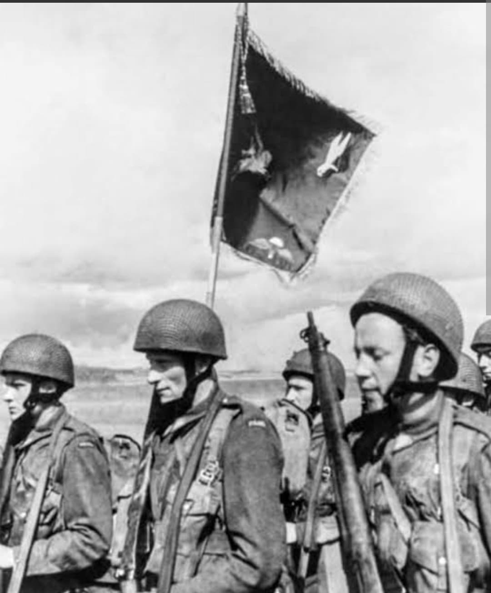
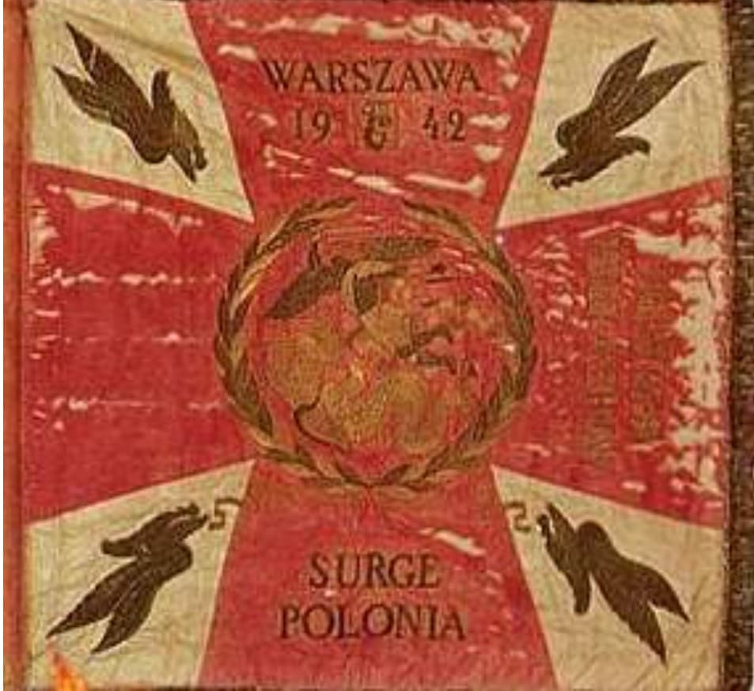
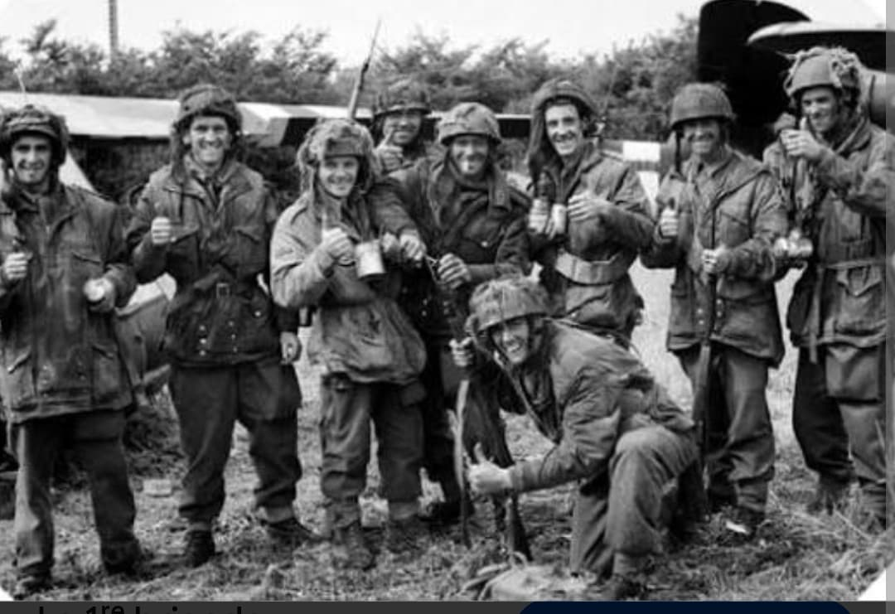

Le général Stanislaw Sosabowski et le sacrifice héroïque des parachutistes polonais à Arnhem (1944)

Créée en Grande-Bretagne en septembre 1941 sous le commandement du visionnaire général Stanisław Sosabowski, la 1re Brigade indépendante de parachutistes polonaise (1. Samodzielna Brygada Spadochronowa) avait pour objectif initial d'être parachutée en Pologne occupée pour soutenir l'insurrection nationale.
Rattachée finalement aux forces du Commonwealth pour le front de l'Ouest, la brigade est devenue l'une des unités aéroportées les plus entraînées et déterminées des Forces alliées, marquant l'histoire militaire lors de l'opération Market Garden.
Constituée de volontaires polonais résolus à libérer leur pays, la brigade s'est entraînée dans des conditions particulièrement exigeantes en Écosse, développant des tactiques d'assaut aéroporté de premier ordre.
Son insigne célèbre représente un **aigle combattant fondant sur sa proie** (Symbolized Diving Eagle), porté fièrement sur le béret gris-bleu de l'unité, incarnant l'audace et la frappe rapide de ces troupes d'élite.

En septembre 1944, lors de l'opération **Market Garden**, la brigade est larguée au sud du Rhin, près du village de **Driel**, pour venir au secours de la 1st Airborne Division britannique encerclée dans la poche d'Arnhem.
Malgré des retards logistiques dus à la météo et un largage sous le feu nourri des troupes allemandes et des SS-Panzer-Divisions, les parachutistes polonais mènent une défense héroïque à Driel. Leur résistance acharnée et leurs tentatives traversées nocturnes du Rhin sous un feu d'enfer ont permis de couvrir le repli des survivants britanniques.

La brigade subit de très lourdes pertes à Arnhem avec plusieurs centaines de tués, blessés et disparus. Malgré la bravoure de ses hommes, le général Sosabowski — qui avait mis en garde le haut-commandement britannique contre les failles du plan — servit injustement de bouc émissaire à l'échec de l'opération et fut relevé de son commandement sous la pression britannique.
Il aura fallu attendre des décennies pour que la vérité historique soit totalement établie. En 2006, le gouvernement néerlandais a décerné à titre posthume la prestigieuse médaille de l'**Ordre militaire de Guillaume** à la 1re Brigade parachutiste polonaise, réhabilitant la mémoire du général Sosabowski et de ses hommes.
Page du Musée HOP WW2 – Section Unités & Divisions Célèbres